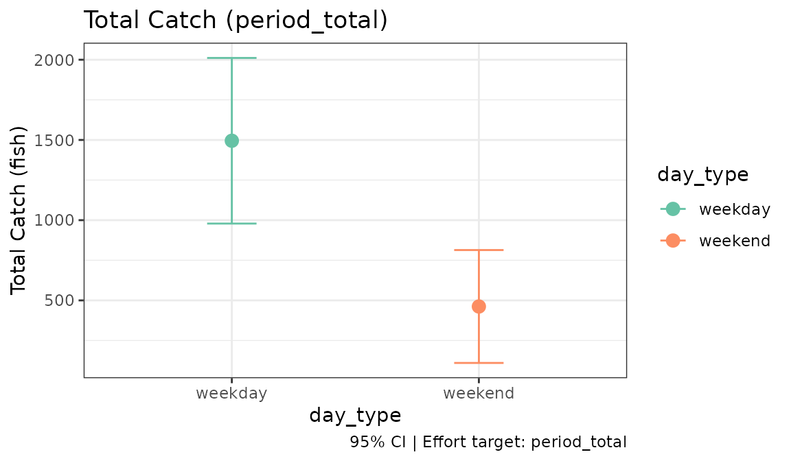

Instantaneous-Count Surveys: Access and Roving Interviews
Source:vignettes/instantaneous-counts.Rmd
instantaneous-counts.RmdWhat this design is
The most common creel survey has two parts, collected separately:
- Instantaneous counts give effort. A clerk counts the anglers fishing at a moment, and that count stands for a period of time.
- Interviews give catch rates. The clerk asks parties how long they have fished and what they have caught.
A total is effort times rate. The interviews come in two kinds, and
the only difference in tidycreel is one argument,
interview_type:
| Access interviews | Roving interviews | |
|---|---|---|
| Where the clerk is | At the access point, as parties leave | Moving through the fishery |
| Trips | Mostly complete | All incomplete: the party is still fishing |
| Catch rate | Ratio of means, complete trips | Mean of ratios, all trips but the shortest |
interview_type |
"access" (the default) |
"roving" |
The counts, and so the effort, are the same either way. This page
runs one season’s counts with each kind of interview.
vignette("tidycreel") walks through the access half step by
step; this page is the short version, plus roving.
Design and counts
design <- creel_design(example_season_calendar, date = date, strata = day_type)
design <- add_counts(design, example_season_counts,
count_col = total_anglers,
period_length_col = daylight_hours
)One count was made on each of the 36 sampled days, and it stands for
the 14-hour fishing day, so daylight_hours is the period
length. Effort for a day is the count times that length, in
angler-hours. Without period_length_col the unit of effort
is unknown and estimate_effort() warns.
Effort
estimate_effort(design, target = "period_total")
#>
#> ── Creel Survey Estimates ──────────────────────────────────────────────────────
#> Method: Total
#> Variance: Taylor linearization
#> Confidence level: 95%
#> Effort target: period_total
#> Unit: angler-hours
#>
#> # A tibble: 1 × 7
#> estimate se se_between se_within ci_lower ci_upper n
#> <dbl> <dbl> <dbl> <dbl> <dbl> <dbl> <int>
#> 1 9994. 1079. 1079. 0 7803. 12186. 36About 9,994 angler-hours over the 120-day season.
target = "period_total" asks for the season; the default,
"sampled_days", is the effort on the 36 days counted. Both
kinds of interview below use this effort.
Access interviews
access <- add_interviews(design, example_season_interviews,
catch = catch_total,
harvest = catch_kept,
effort = hours_fished,
trip_status = trip_status,
n_anglers = n_anglers
)
#> ℹ 153 interviews have zero catch.
#> Zero catch is usual; check it is not missing data recorded as 0.
#> ℹ Added 231 interviews: 172 complete (74%), 59 incomplete (26%)
estimate_catch_rate(access)
#> ℹ Using complete trips for CPUE estimation
#> (n=172, 74.5% of 231 interviews) [default]
#>
#> ── Creel Survey Estimates ──────────────────────────────────────────────────────
#> Method: Ratio-of-Means CPUE
#> Variance: Taylor linearization
#> Confidence level: 95%
#> Unit: fish/angler-hour
#>
#> # A tibble: 1 × 5
#> estimate se ci_lower ci_upper n
#> <dbl> <dbl> <dbl> <dbl> <int>
#> 1 0.221 0.0415 0.139 0.302 172
access_catch <- estimate_total_catch(access, target = "period_total")
access_catch
#>
#> ── Creel Survey Estimates ──────────────────────────────────────────────────────
#> Method: Total Catch (Effort × CPUE)
#> Variance: Taylor linearization
#> Confidence level: 95%
#> Effort target: period_total
#> Unit: fish
#>
#> # A tibble: 1 × 5
#> estimate se ci_lower ci_upper n
#> <dbl> <dbl> <dbl> <dbl> <int>
#> 1 2230. 482. 1278. 3183. 172interview_type is left at "access". The
catch rate is a ratio of means over the 172 complete trips: total catch
divided by total angler-hours, about 0.22 fish per angler-hour. The 59
incomplete trips are left out, because a party met while still fishing
is more likely to be met the longer it stays. Times about 9,994
angler-hours, that is about 2,230 fish.
Roving interviews
head(example_roving_interviews)
#> date day_type interview_id trip_status hours_fished n_anglers
#> 1 2024-05-06 weekday 1 incomplete 1.85 1
#> 2 2024-05-06 weekday 2 incomplete 1.74 2
#> 3 2024-05-06 weekday 3 incomplete 1.74 1
#> 4 2024-05-06 weekday 4 incomplete 0.56 2
#> 5 2024-05-06 weekday 5 incomplete 2.90 3
#> 6 2024-05-07 weekday 6 incomplete 2.51 1
#> catch_total catch_kept
#> 1 2 0
#> 2 0 0
#> 3 0 0
#> 4 0 0
#> 5 0 0
#> 6 2 1
roving <- add_interviews(design, example_roving_interviews,
catch = catch_total,
harvest = catch_kept,
effort = hours_fished,
trip_status = trip_status,
trip_duration = hours_fished,
n_anglers = n_anglers,
interview_type = "roving"
)
#> ℹ 133 interviews have zero catch.
#> Zero catch is usual; check it is not missing data recorded as 0.
#> ℹ Added 212 interviews: 0 complete (0%), 212 incomplete (100%)Every party in example_roving_interviews was still
fishing, so catch_total and hours_fished are
the catch and the hours so far. trip_duration is the time
the party had fished when interviewed, which here is
hours_fished. tidycreel uses it to drop very short trips,
below.
estimate_catch_rate(roving)
#> ℹ Roving design: using all 212 interviews for CPUE via MOR [auto]
#> (0 complete, 212 incomplete)
#> Override with `use_trips = 'complete'` for access-point estimation.
#> Warning: ! MOR truncation: 29 trips excluded (13.7%)
#> ℹ Trips < 0.5 hours excluded to prevent unstable variance
#> ! High truncation rate may indicate data quality issues
#> ℹ Consider reviewing trip duration data for errors
#> ── MOR Estimator (All Trips) ───────────────────────────────────────────────────
#> Averages per-trip CPUE ratios over 183 interviews (183 incomplete).
#> Truncation: 29 trips excluded (< 0.5 hours)
#>
#>
#> ── Creel Survey Estimates ──────────────────────────────────────────────────────
#> Method: Mean-of-Ratios CPUE
#> Variance: Taylor linearization
#> Confidence level: 95%
#> Unit: fish/angler-hour
#>
#> # A tibble: 1 × 5
#> estimate se ci_lower ci_upper n
#> <dbl> <dbl> <dbl> <dbl> <int>
#> 1 0.197 0.0233 0.151 0.243 183With interview_type = "roving", tidycreel uses the
mean-of-ratios estimator of Hoenig et al. (1997) over all trips: each
party’s catch per angler-hour so far, averaged. A ratio of means would
be wrong here. A roving clerk meets long trips more often than short
ones, and the ratio of means gives those trips more weight again.
Averaging each party’s own rate does not.
The warning is expected, and is the subject of this paragraph. A
party interviewed a few minutes into its trip has a catch rate that is
mostly noise: one fish in ten minutes is six fish an hour. By default
trips that have fished less than half an hour
(truncate_at = 0.5, following Hoenig et al. 1997) are left
out of the rate, and tidycreel reports how many. Here it is 29 of 212
parties. The warning also suggests this many short trips may be a data
problem. It is not here: a clerk who meets parties at random points in
their trips meets some of them early. Check your own data before
deciding the same.
The rate is about 0.20 fish per angler-hour from the 183 parties that had fished at least half an hour. The parties were simulated with a true catch rate of 0.22 fish per angler-hour, inside the 95% confidence interval of 0.15 to 0.24.
roving_catch <- estimate_total_catch(roving, target = "period_total")
#> Warning: ! MOR truncation: 29 trips excluded (13.7%)
#> ℹ Trips < 0.5 hours excluded to prevent unstable variance
#> ! High truncation rate may indicate data quality issues
#> ℹ Consider reviewing trip duration data for errors
roving_catch
#>
#> ── Creel Survey Estimates ──────────────────────────────────────────────────────
#> Method: Total Catch (Effort × CPUE)
#> Variance: Taylor linearization
#> Confidence level: 95%
#> Effort target: period_total
#> Unit: fish
#>
#> # A tibble: 1 × 5
#> estimate se ci_lower ci_upper n
#> <dbl> <dbl> <dbl> <dbl> <int>
#> 1 1957. 314. 1337. 2577. 183
estimate_total_harvest(roving, target = "period_total")
#> Warning: ! MOR truncation: 29 trips excluded (13.7%)
#> ℹ Trips < 0.5 hours excluded to prevent unstable variance
#> ! High truncation rate may indicate data quality issues
#> ℹ Consider reviewing trip duration data for errors
#>
#> ── Creel Survey Estimates ──────────────────────────────────────────────────────
#> Method: Total Harvest (Effort × HPUE)
#> Variance: Taylor linearization
#> Confidence level: 95%
#> Effort target: period_total
#> Unit: fish
#>
#> # A tibble: 1 × 5
#> estimate se ci_lower ci_upper n
#> <dbl> <dbl> <dbl> <dbl> <int>
#> 1 628. 148. 335. 921. 183The totals multiply the same season effort by the roving rates: about 1,960 fish caught and 630 kept. Each estimate built on a roving rate drops the short trips again, and warns again.
Results as data
as_tibble() turns an estimate into a table with one row
per estimate and the metadata in columns. Binding the two catch totals
shows them side by side:
totals <- rbind(
data.frame(
interviews = "access",
tibble::as_tibble(access_catch)
),
data.frame(
interviews = "roving",
tibble::as_tibble(roving_catch)
)
)
totals[, c("interviews", "estimate", "se", "estimator", "unit")]
#> interviews estimate se estimator unit
#> 1 access 2230.484 482.4044 ratio-of-means fish
#> 2 roving 1956.962 314.0075 mor fishThe two are different sets of interviews from the same days, so their totals need not agree; they should be close when both kinds of interview describe the same fishery.
Plot
ggplot2::autoplot(
estimate_total_catch(roving, by = day_type, target = "period_total")
)
#> Warning: ! MOR truncation: 29 trips excluded (13.7%)
#> ℹ Trips < 0.5 hours excluded to prevent unstable variance
#> ! High truncation rate may indicate data quality issues
#> ℹ Consider reviewing trip duration data for errors
References
Hoenig, J. M., Jones, C. M., Pollock, K. H., Robson, D. S., and Wade, D. L. (1997). Calculation of catch rate and total catch in roving surveys of anglers. Biometrics 53:306–317.
Pollock, K. H., Jones, C. M., and Brown, T. L. (1994). Angler Survey Methods and Their Applications in Fisheries Management. American Fisheries Society Special Publication 25.